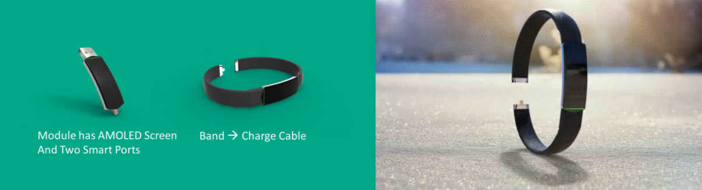
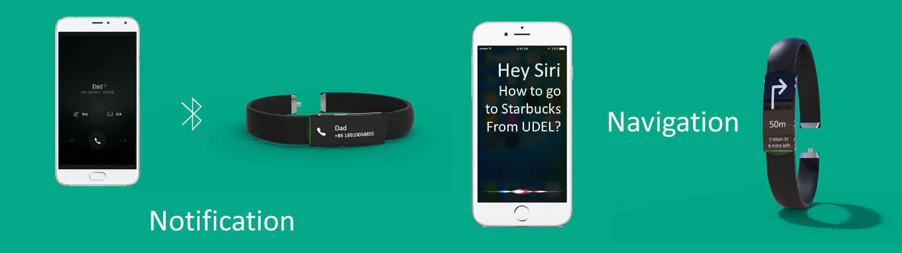
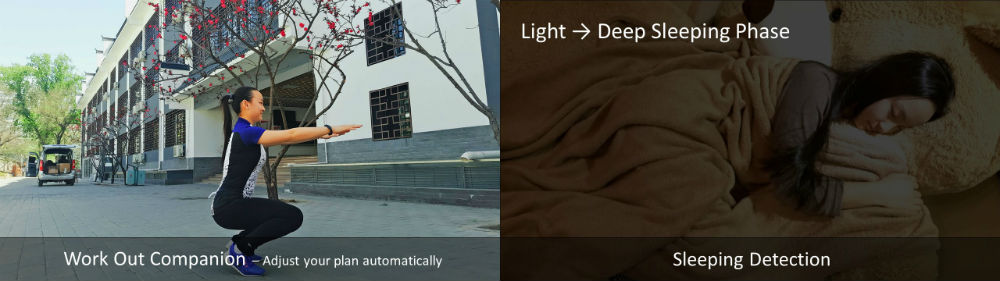
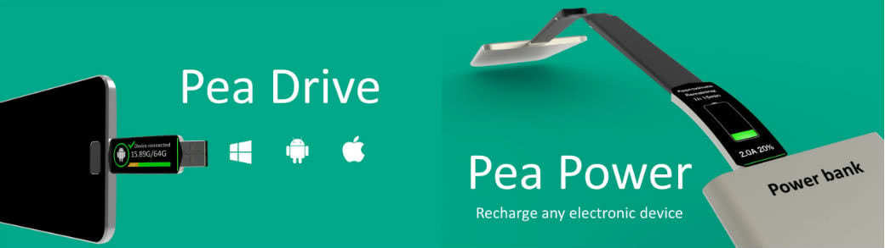

PeaBand
Introducing the Next Generation Wearable Device
Peaband is a conceptual wearable device product created by Fred JingYu Zheng, Wendy WanQin Wen, Susan Yi Cao, and Frankie Hao Yuan in 2016. They were high school students at Beijing Bayi School International Department(BYID), and this product is for Diamond Challenge, a business concept competition held by University of Delaware. Helped by their advisor, Martin Thompson, these group of high school students with enthusiasm were one of the three teams advanced into the semi-final via internet pitch. And they were invited to Delaware to participate the Youth Entrepreneurship Summit (YES!).
If you have any thought about this product, please contact me with email - frankie.yuan[at]yahoo.com
Steve Jobs said "I think if you do something and it turns out pretty good, then you should go do something else wonderful, not dwell on it for too long. Just figure out what's next." So we asked ourselves, what is next? What is New EXciting Technology?
Technology today, in the form of computers and mobile phones bring us so many conveniences. We can get whatever information whenever we want it, ... just not necessarily WHERE we want it. Where is the easiest and the most convenient place for a person to look for and access information?
Apperance
For the appearance, our design strategy is to be concise and functional. The Pea Module has a tritium self-luminous light to make the band dramatically beautiful. The Pea module has a curved AMOLED Screen with two smart ports that can be USB of two sizes or other proprietary ports licensed from other manufacturers. And we use smooth aluminum alloy to make it beautiful and comfortable.
The Basics
As for basic functions, Pea Band will notify you when a phone call or new message arrives. You can also ask your phone's digital assistant through the Pea module to navigate for you, and the navigation information will be updated on the band.
Health Care
Pea Band does more for our health. It will collect all your exercise data and transmit to your smart phone. The application on the phone will give you a suitable plan for exercising, and this plan will adjust automatically according to your true performance. Do you always forget to put your phone under your pillow at night to monitor your sleep habits? Worry no more! The Pea Band can detect your movements all night long. After analyzing, the Pea Band will wake you at the best time in your sleeping cycle.
The Revolution
Besides the aforementioned expected functions, Pea Band has some really revolutionary features. In order to prevent loss of flash drives, many people like our team advisor, attach them to their key chain. No more! the Pea Module doubles as a flash drive. The band is multifunctional as well doubling as a charge cable. You don't need to worry about finding the charging cable ever again. View More Projects